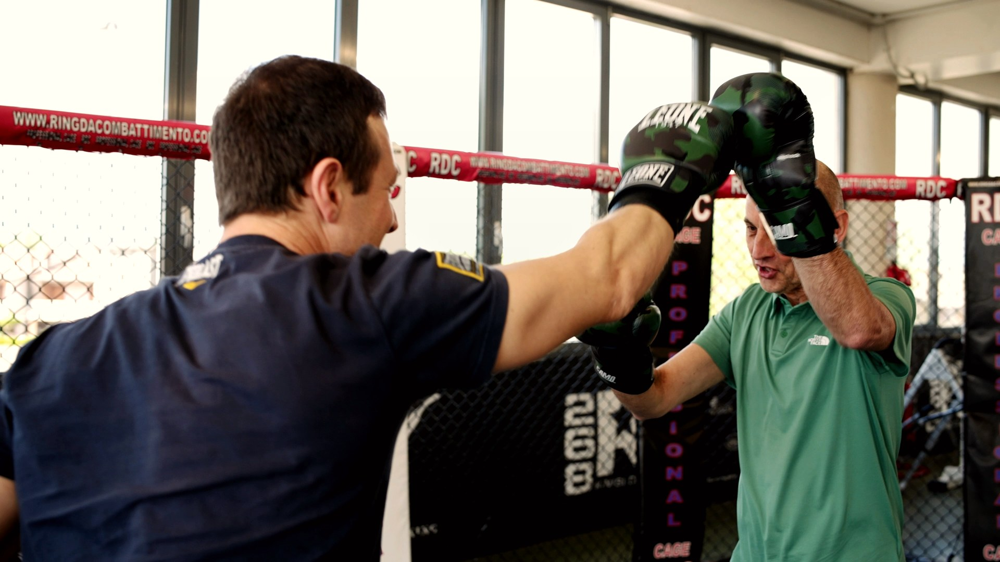

Divertimento senza metodo
Il team partecipa, ride, si diverte, ma non porta a casa linguaggio, accordi e strumenti da usare davvero.
Team building aziendale sportivo
BeOx aiuta HR, imprenditori e manager a costruire esperienze di team building aziendali che uniscono metafora sportiva e grandi campioni per trasformare i gruppi di lavoro in vere e proprie squadre. Non solo energia per una giornata: un metodo per allineare comunicazione e fiducia, collaborazione, pressione e leadership.
Il problema dei team building tradizionali
Molte aziende investono tempo, budget e una giornata di stop in attività coinvolgenti che creano entusiasmo sul momento, ma non lavorano sulle vere cause: allineamento debole, comunicazione faticosa, ruoli poco chiari, fiducia fragile o leadership sotto pressione.
Il team partecipa, ride, si diverte, ma non porta a casa linguaggio, accordi e strumenti da usare davvero.
L'attività resta scollegata dalle dinamiche reali dell'azienda, dai ruoli e dalle priorità operative.
Il lunedi dopo, ruoli, comunicazione e tensioni tornano esattamente come prima.
Hai fermato il team, ma non hai creato un vero punto di partenza per comportamenti nuovi.
Per chi e pensato
Il team building BeOx è indicato quando alcuni segnali interni mostrano che il gruppo ha bisogno di ritrovare energia, fiducia, allineamento e comportamenti più utili nel lavoro quotidiano.
Quando energia, iniziativa e partecipazione calano e il gruppo sembra eseguire senza sentirsi davvero coinvolto.
Quando informazioni, feedback e priorità non circolano bene e aumentano incomprensioni, errori o tensioni.
Quando le persone lavorano nello stesso gruppo, ma non si percepiscono come parte di una vera squadra.
Quando crescita, urgenze o nuove sfide stanno mettendo alla prova fiducia, leadership e collaborazione.
Prima leggiamo il bisogno
Prima di progettare un team building, BeOx aiuta HR e manager a leggere segnali, percezioni e priorità: motivazione, comunicazione, fiducia, collaborazione, pressione e leadership.
Alleniamo dove gli altri organizzano
I nostri team building con grandi campioni dello sport sono ludico-formativi: esperienze vive, pratiche e coinvolgenti, costruite per far emergere dinamiche reali del team e allenare nuove risposte.
La componente sportiva rende tutto più immediato, concreto e memorabile. La componente formativa trasforma il gioco in apprendimento.
Parliamo del tuo team

Il valore dei campioni
I campioni dello sport hanno vissuto sulla propria pelle preparazione, disciplina, paura, pressione, vittoria, sconfitta e responsabilità. Dentro un percorso BeOx non portano solo ispirazione: aiutano il team a vedere cosa significa allenare un mindset e trasformarlo in azioni concrete.

Format possibili
Non partiamo dal catalogo. Partiamo dal bisogno del team e costruiamo il format più adatto per obiettivi, persone, contesto e livello di coinvolgimento.

La metafora della boxe portata da grandi campioni del pugilato.
Un team building ludico-formativo per allenare collaborazione, spirito di squadra e fiducia reciproca.

Team Building guidato da campioni sportivi per lavorare su mindset, pressione, resilienza e performance.

Percorso aziendale su cultura della sicurezza, comunicazione assertiva, confini, difesa da aggressioni fisiche e verbali e moduli esperienziali come Autodifesa in Rosa.

Un team building esperienziale che, attraverso la potente metafora del calcio amputati, allena il gruppo ad adattarsi al cambiamento, superare i limiti percepiti e trovare nuove strategie per raggiungere insieme l'obiettivo.
Metodo BeOx
Ogni team building viene progettato sulle reali esigenze del gruppo: analisi iniziale, scelta della metafora sportiva, attività pratica, debriefing e trasferimento nel contesto lavorativo. Questo rende la giornata più utile per HR, manager e partecipanti.
Comprendiamo obiettivi, pubblico, vincoli, messaggi da trasferire e contesto organizzativo.
Raccogliamo segnali su clima, comunicazione, fiducia, leadership, conflitti e pressione.
Disegniamo format, attività, campioni e formatori in base alle priorità emerse.
Il team vive sfide pratiche, metafore sportive, esercizi e momenti di confronto.
Ricolleghiamo cio che e successo durante l'esperienza a ruoli, relazioni e lavoro quotidiano.
Il team esce con spunti, accordi e comportamenti da applicare subito o sviluppare in un percorso.
Cosa alleniamo
Ogni esperienza è progettata per far emergere dinamiche reali e trasformarle in comportamenti più chiari, condivisi e applicabili.
Parlare chiaro, ascoltare, dare feedback e gestire incomprensioni.
Costruire affidabilità, responsabilità e sicurezza reciproca.
Passare dal gruppo alla squadra, con obiettivi e ruoli condivisi.
Agire con lucidità quando aumentano complessità, urgenza e aspettative.
Usare l'errore come dato, non come colpa.
Far emergere responsabilità, iniziativa e capacità di guida.
Trasformare tensioni e differenze in confronto utile.
Creare routine, accordi e comportamenti che migliorano i risultati.
Perché lo sport funziona
In una sfida sportiva emergono subito comunicazione, ruoli, fiducia, pressione, gestione dell'errore, leadership e capacità di adattamento. Lo sport rende concrete dinamiche che in aula resterebbero teoriche.
Vedi come diventa metodoAccessibile e inclusivo
Le attività BeOx sono progettate per essere inclusive, accessibili e modulabili. La parte sportiva non serve a selezionare i più forti, ma a far emergere dinamiche utili al team.
Progetta un format accessibileQuando il team è poco allineato.
Quando comunicazione e collaborazione sono faticose.
Quando ci sono conflitti o tensioni non gestite.
Quando un nuovo team deve conoscersi e creare fiducia.
Quando l'azienda sta vivendo cambiamento, crescita o pressione.
Quando vuoi un evento memorabile, ma anche formativo.
Quando vuoi trasformare una giornata aziendale in un punto di partenza.
Cosa resta dopo
Non solo foto, entusiasmo e ricordi: un'esperienza BeOx deve lasciare consapevolezza, linguaggio comune, accordi, comportamenti da allenare e una direzione più chiara.
Una prima lettura di ciò che il team mostra durante l'esperienza.
Formatori e specialisti aiutano a decodificare la metafora sportiva.
Il team vede cosa funziona e cosa deve essere allenato meglio.
Spunti, accordi e comportamenti da riportare nel lavoro quotidiano.



FAQ
Un team building aziendale è un'esperienza formativa pensata per rafforzare collaborazione, comunicazione, fiducia e senso di appartenenza. Serve quando un gruppo deve diventare una squadra più allineata, capace di lavorare meglio sotto pressione e orientata a obiettivi condivisi.
Un team building sportivo per aziende usa la metafora dello sport per rendere visibili dinamiche di team come ruoli, leadership, followership, fiducia, comunicazione e gestione dell'errore. Con BeOx l'esperienza viene collegata al lavoro quotidiano attraverso debriefing e trasferimento operativo.
Un team building BeOx può migliorare comunicazione interna, fiducia, collaborazione, motivazione, gestione dei conflitti e orientamento ai risultati. L'obiettivo non è creare solo energia per una giornata, ma far emergere comportamenti utili e trasformarli in accordi pratici per il team.
Un team building ludico-formativo unisce coinvolgimento, gioco e apprendimento esperienziale. I partecipanti vivono attività dinamiche e sfide di gruppo, poi rileggono ciò che è accaduto per lavorare su collaborazione, comunicazione, leadership, inclusione, gestione della pressione e performance.
Un team building esperienziale permette alle persone di imparare facendo. A differenza di una semplice attività ricreativa, fa emergere dinamiche reali del gruppo e le collega al contesto aziendale tramite debriefing, così l'esperienza diventa apprendimento applicabile nel lavoro quotidiano.
BeOx progetta format su misura: esperienze con la metafora della boxe, percorsi su pressione e stress, attività su comunicazione e conflitti, team building su cambiamento e adattamento, percorsi di inclusione, parità di genere, sicurezza personale e autodifesa fisica o verbale.
Sì. Nei percorsi BeOx lo sport è una metafora formativa, non una prova atletica. Le attività vengono adattate al gruppo, al contesto e al livello dei partecipanti, con attenzione a sicurezza, inclusione e coinvolgimento anche di chi non pratica sport.
Un team building con la boxe non è combattimento: usa il pugilato come metafora per allenare concentrazione, rispetto, autocontrollo, comunicazione, fiducia e confronto costruttivo. È indicato per aziende che vogliono lavorare su collaborazione, conflitto, pressione e obiettivi comuni.
Sì. BeOx progetta team building su comunicazione, feedback, ascolto, assertività e gestione dei conflitti. Le attività aiutano il gruppo a trasformare lo scontro in confronto utile, migliorando clima aziendale, fiducia, relazioni professionali e qualità della collaborazione.
Sì. Un team building su stress e pressione aiuta le persone a riconoscere le proprie reazioni nei momenti critici e a sviluppare strategie per mantenere lucidità, comunicazione e orientamento al risultato. È particolarmente utile per manager, team commerciali e reparti operativi.
Sì. BeOx realizza percorsi dedicati ad adattamento, cambiamento e resilienza organizzativa, anche attraverso metafore sportive come il calcio amputati. L'esperienza aiuta il team a trovare nuovi equilibri, nuove strategie e modalità di collaborazione nei contesti complessi.
Sì. BeOx può integrare nei team building temi come inclusione, parità di genere, valorizzazione delle diversità, sicurezza personale e benessere organizzativo, anche attraverso percorsi su empowerment, cultura della sicurezza e moduli come Autodifesa in Rosa.
I team building BeOx sono rivolti ad aziende, HR manager, imprenditori, responsabili formazione, manager, team leader, reti commerciali e gruppi di lavoro. Sono adatti a team appena formati, reparti da riallineare, aziende in cambiamento e organizzazioni che vogliono rafforzare cultura interna e performance.
Un team building aziendale può durare mezza giornata, una giornata intera o diventare un percorso più strutturato. BeOx può organizzarlo in azienda, in palestra, in hotel, in centri congressi, in location outdoor o in contesti sportivi selezionati.
BeOx progetta team building aziendali in tutta Italia, con format indoor, outdoor, in azienda o in location esterne. Opera nelle principali aree aziendali e produttive, tra cui Milano, Roma, Torino, Bologna, Firenze, Padova, Verona, Vicenza, Treviso, Venezia, Genova, Napoli e Bari.
Sì. Ogni team building BeOx viene progettato in base a obiettivi, settore, numero di partecipanti, livello di coinvolgimento desiderato e dinamiche del team. Il percorso può lavorare su comunicazione, leadership, followership, conflitti, stress, inclusione, motivazione e risultati.
L'efficacia si misura osservando l'evoluzione delle dinamiche del gruppo: comunicazione più chiara, maggiore fiducia, collaborazione, riduzione dei conflitti, senso di appartenenza e orientamento ai risultati. BeOx può integrare survey, analisi del clima, debriefing e follow-up.
Per richiedere un preventivo è utile indicare numero di partecipanti, obiettivi, periodo desiderato, durata, location e temi prioritari come collaborazione, comunicazione, leadership, gestione dei conflitti, stress, inclusione o performance. BeOx potrà proporre il format più adatto.
Richiedi una proposta
Raccontaci il tuo contesto. Ti aiuteremo a capire quale esperienza può essere più utile per il tuo team e come trasformarla in un percorso concreto.